·programma laden…
Je krijgt meteen jouw eigen selectie te zien. Je kan later altijd wisselen via de knop bovenaan.
Terreinkaart van Fri3d Camp. Het rode icoon is de plek die je zocht.
Eén keer instellen op jouw toestel. De anderen krijgen een uitnodigingslink en moeten verder niets doen.